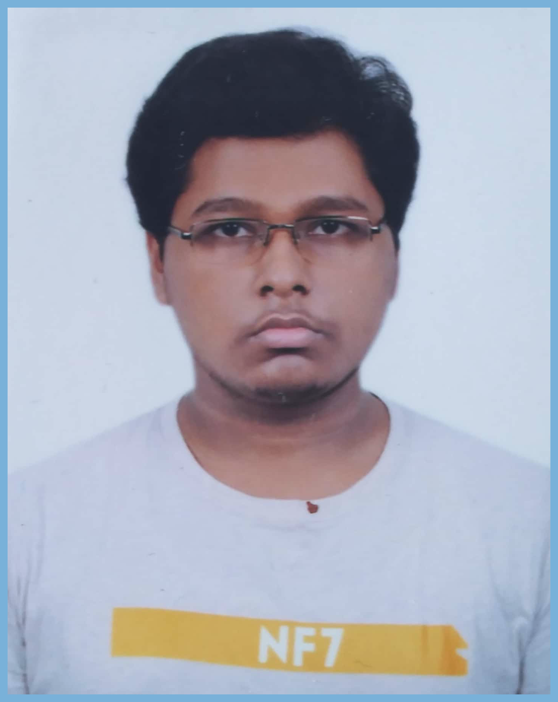

Curriculum Vitae

- Name: Dilshad Hossain
- Date Of Birth: 18th November,2000
- Address: 886/1, Rajarbagh, Shahidbagh, Dhaka
- Phone No: 01956502023
- Email: dilshadhossain99@gmail.com
Career Objective:
Secure a responsible career opportunity to fully utilize my training and skills, while making a significant contribution to the success of the company.
Education:
J.S.C : 5.00
(BIAM Model School & College) - 2015 |
S.S.C : 4.83
(BIAM Model School & College) - 2017 |
H.S.C : 4.67
(Daffodil International College) - 2019 |
Extracurricular Activities:
- Participated in St.joseph Math Olympiad - 2016
- Volunteered in Organizing YES Seminar
Skill:
- Can speak English and Bangla fluently
- Skilled in using Adobe PS And Illustrator
Reference:
1. Dr. Monzur Rahman
Lecturer
Notre-Dame College